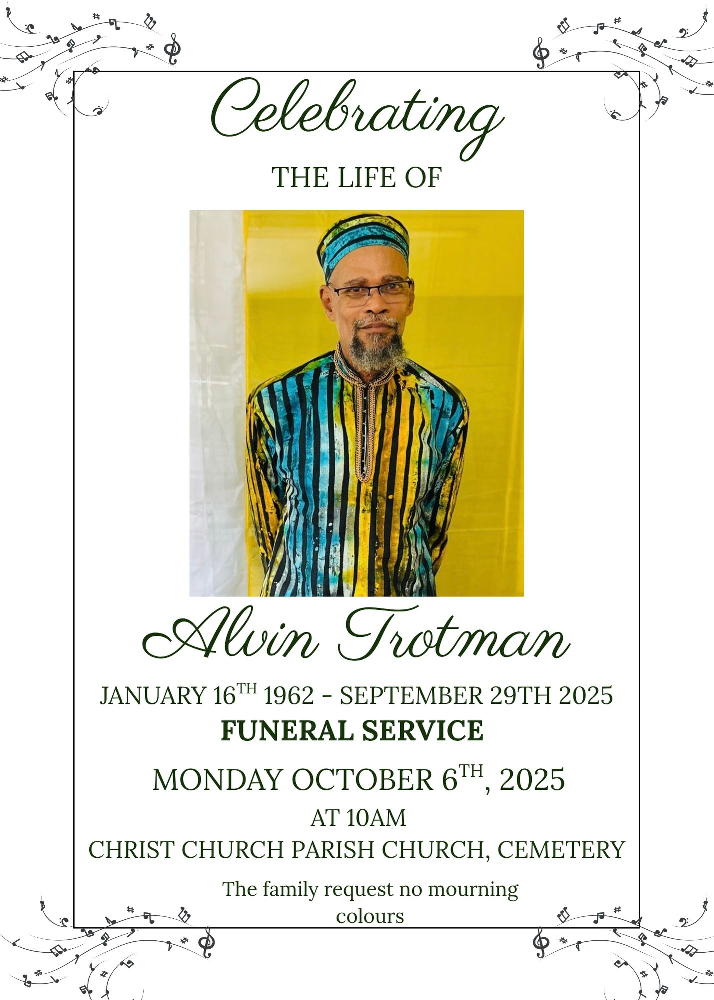

The day my brother called, I already knew we wouldn’t be able to get up on a church’s pulpit and deliver a eulogy for you, so I’ll have to do it in the only way I know how to do anything… to and through a computer.
For as long as I could remember, maybe even from the very start, we had a fraught relationship. But I’m not sure what else could be expected from a father who divorced my mother immediately after I was born. Whatever the reasons, nobody can exactly say that’s a prime way to start any sort of relations—parental or otherwise.
P.s. dear reader, I’m someone who often makes use of the Harvard Comma. So if you dislike them, fuck you and your AI detection tools for having never learned their true power in prose… please, carry on.
One thing I definitely inherited from you, Dad, is an astounding ability to hold the strongest of opinions on things as trivial as an emdash. Mind you, my stubbornness could never match yours. But I do love being the kind of person who will continue to use the emdash and profusely comment my code while everyone else avoids using them in this current timeline. Even though you disagreed with pretty much everything I did, it’s because of you I’m so comfortable doing my own thing. But it’s also why I’m such a pushover at times.
I spent my entire childhood watching you bend everyone around you to your will. If you wanted someone to do anything, they either did it immediately or eventually. But I swear, up until the day you lost all of your strength, I’ve never seen another human being resist your decree. As a child, it did more to traumatise than positively impress me; you were the most imposing figure I knew, and absolutely nothing scared me more than drawing your ire—often reducing me to a pool of tears with the thunder of your voice alone.
On the other hand, most ladies would describe me as exceptionally soft, but that’s because I explicitly spent my entire life trying to get away from and be the complete opposite of you. None of my siblings know this, and they never will unless they read/find this URL. And as their eldest brother, I sincerely hope they don’t… but, saying as how three out of your five children are fairly competent programmers, I’m sure they’ll find this sooner or later.
It wasn’t fair to any of us, it just wasn’t fair that your youngest son had to call his oldest brother at work to tell me our father just died. He wasn’t ready for that, I wasn’t ready for that, your ex-wife wasn’t ready for that, not a single fucking soul who knew you was ready for that!! But you wanted to go, and I suppose as always, you just had to do things your own way.
The biggest impression a person has left on the world is probably what those they left behind say after you’re gone. The deepest sentiment at your funeral was about how talented you were. If something falls under the domain of art, I promise you were hands down the absolute best I knew at it. You wouldn’t believe the amount of incredible people I’ve met online these past couple of years. Amazing as they are, your artwork would make theirs look like utter shite by comparison. And though I never dared tell you this in life, I was always a little jealous of your natural and seemingly effortless talents—always resented the way I thought you wasted them… I’d yank out baby Kurta Clan eyeballs to be able to write, or draw, or paint, or cook, or tailor clothes, or play ANY instrument as well as you could with anything you ever touched. The world is a slightly more beautiful place simply because you lived.
May never be as artistically gifted, but you should be beyond proud. It only took a distributed ounce of your innate talents for all of your children to inherit incredible minds. Collectively, our biggest struggle in life is just deciding what to do, as opposed to ever feeling like we’re incapable of doing anything technical. Maybe all of your artistic energy was transmuted into the technical prowess all of your children share. Growing up in your house, The Dutch House, was the best of times and the worst of times. Some days you frustrated me to no end, but most of the time I was just in awe watching you create.
Now that you’re gone, I could never bring myself to say I ever hated you, even if I did feel that way many times as a child while you lived… I mean, you used verbal and corporal punishment on me just for watching Pokémon. But you were a hardcore Christian, and from your perspective, your firstborn son was flippantly enjoying demonic programming on TV.
Despite spending my entire life running away from you, it absolutely breaks my heart to know that you’re not here anymore. You’ll always be the most incredible man I’ve ever known, even if I disliked much of what you believed about the world. I know you were only trying to be the best father and man you could be to us, the best way you knew how. And to be honest, I’d be doing much better in life if I only had a slither of your grit and willpower.
Luffy is the most dangerous Yonko on the sea, but Garp is the celebrated Hero of the Marines. I know you don’t have a clue what the fuck that even means, but just know it’s so literally us that I’m crying a waterfall as I type it... it’s just like you to forbid your own children from mourning your death. Who the fuck even does that 😭???!!
I love you, Dad ❤️
I may not be religious, but I do believe in the eternity of life. On
a fundamental level, energy cannot be destroyed, it can only ever
change form, and you were the biggest ball of it I’ve ever known. So
since I know you’re seeing this, thanks for giving me a real-life
Will of D. And for trying your best to be a great man in your own
way. All I can do now is promise you I’ll try to do the same… so
maybe we were always identical in the end 🕊️